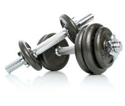
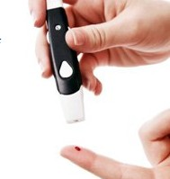
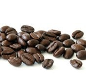

1. Coffee Can Improve Energy Levels and Make You Smarter
Coffee can help people feel less tired and increase energy levels (1, 2).
This is because it contains a stimulant called caffeine, which is actually the most commonly consumed psychoactive substance in the world (3).
After you drink coffee, the caffeine is absorbed into the bloodstream. From there, it travels into the brain (4).
In the brain, caffeine blocks an inhibitory neurotransmitter called Adenosine.
When that happens, the amount of other neurotransmitters like norepinephrine and dopamine actually increases, leading to enhanced firing of neurons (5, 6).
Many controlled trials in humans show that coffee improves various aspects of brain function. This includes memory, mood, vigilance, energy levels, reaction times and general cognitive function (7, 8, 9).
2. Coffee Can Help You Burn Fat
Did you know that caffeine is found in almost every commercial fat burning supplement?
There’s a good reason for that… caffeine is one of the very few natural substances that have actually been proven to aid fat burning.
Several studies show that caffeine can boost the metabolic rate by 3-11% (10, 11).
Other studies show that caffeine can specifically increase the burning of fat, by as much as 10% in obese individuals and 29% in lean people (12).
However, it is possible that these effects will diminish in long-term coffee drinkers.

3. The Caffeine Can Drastically Improve Physical Performance
Caffeine stimulates the nervous system, causing it to send signals to the fat cells to break down body fat (13, 14).
But caffeine also increases Epinephrine (Adrenaline) levels in the blood (15, 16).
This is the “fight or flight” hormone, designed to make our bodies ready for intense physical exertion.
Caffeine makes the fat cells break down body fat, releasing them into the blood as free fatty acids and making them available as fuel (17, 18).
Given these effects, it is not surprising to see that caffeine can improve physical performance by 11-12%, on average (29, 20).
Because of this, it makes sense to have a strong cup of coffee about a half an hour before you head to the gym.
4. There Are Essential Nutrients in Coffee
Coffee is more than just black water. Many of the nutrients in the coffee beans do make it into the final drink.
A single cup of coffee contains (21):
Riboflavin (Vitamin B2): 11% of the RDA.
Pantothenic Acid (Vitamin B5): 6% of the RDA.
Manganese and Potassium: 3% of the RDA.
Magnesium and Niacin (B3): 2% of the RDA.>
Although this may not seem like a big deal, most people are drinking more than one cup per day. If you drink 3-4, then these amounts quickly add up.

5. Coffee May Lower Your Risk of Type II Diabetes
Type 2 diabetes is a gigantic health problem, currently afflicting about 300 million people worldwide.
It is characterized by elevated blood sugars in the context of insulin resistance or an inability to secrete insulin.
For some reason, coffee drinkers have a significantly reduced risk of developing type 2 diabetes.
The studies show that people who drink the most coffee have a 23-50% lower risk of getting this disease, one study showing a reduction as high as 67% (22, 23, 24, 25, 26).
According to a massive review that looked at data from 18 studies with a total of 457,922 individuals, each daily cup of coffee was associated with a 7% reduced risk of developing type 2 diabetes (27).
6. Coffee May Protect You From Alzheimer’s Disease and Dementia
Alzheimer’s disease is the most common neurodegenerative disease and the leading cause of dementia worldwide.
This disease usually affects people over 65 years of age.
Unfortunately, there is no known cure for Alzheimer’s.
However, there are several things you can do to prevent the disease from showing up in the first place.
This includes the usual suspects like eating healthy and exercising, but drinking coffee may be incredibly effective as well.
Several studies show that coffee drinkers have up to a 65% lower risk of getting Alzheimer’s disease (28, 29).

7. Caffeine May Lower The Risk of Parkinson's
Parkinson’s disease is the second most common neurodegenerative disease, right after Alzheimer’s.
It is caused by death of dopamine-generating neurons in the brain.
Same as with Alzheimer’s, there is no known cure, which makes it that much more important to focus on prevention.
In studies, coffee drinkers have a much lower risk of developing Parkinson’s disease, with a reduction in risk ranging from 32-60% (30, 31, 32, 33).
In this case, it appears to be the caffeine itself that is causing the effect. People who drink decaf don’t have a lower risk of Parkinson’s (34).